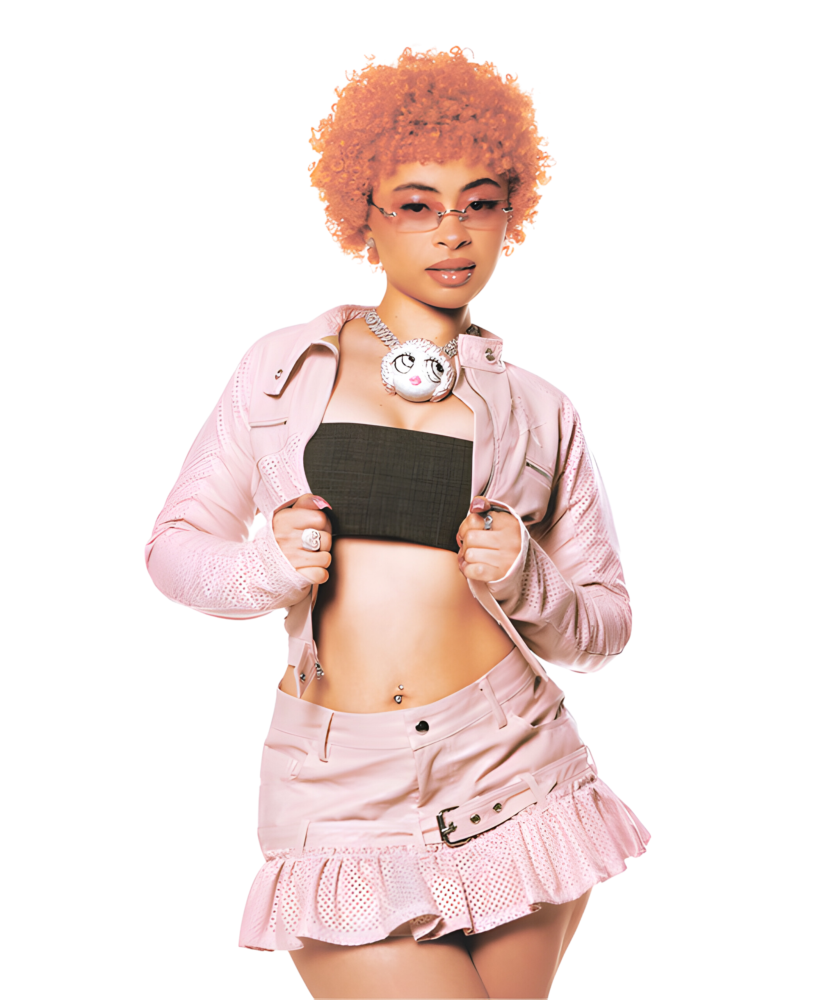

If he cheatin', I'm doin' him worse (like)
No UNO, I hit the reverse (grrah)
I ain't trippin', the grip in my purse (grrah)
I don't care, 'cause he did it first (like)
If he cheatin', I'm doin' him worse (damn)
I ain't trippin', I (I ain't trippin', I)
I ain't trippin', the grip in my purse (like)
I don't care, 'cause he did it first (baby, do you understand)
He beg me to stay, but I'm dippin'
I don't even drink, but I'm sippin'
We not fuckin', but he put the tip in (grrah)
He get on my nerves, but I'm with it (grrah)(baby, do you understand)
I start thinkin' when he get up in it
I'm like, "Damn, I knew you for a minute" (damn)
I don't want them [redacted] (in our business, like)
I'm like, "Bae, you know you the realest" (grrah)(baby, do you understand)
I'm like, "Fuck it, " I know he gon' spend (like)
I'm with Tati and her thotty friend
We like, "Fuck it, " we fuckin' his friends (grrah)(baby, in my hand)
We gon' party 'til the party ends
I'm a baddie, he fuck with my tats (like)
Big boobs and it come with a jatt
Say he don't want me, I know he a cap (cap)(baby, do you understand)
Oh, you cheatin'? Then I'm cheatin' back
If he cheatin', I'm doin' him worse (like)
No UNO, I hit the reverse (grrah)
I ain't trippin', the grip in my purse (grrah)
I don't care, 'cause he did it first (like)
If he cheatin', I'm doin' him worse (damn)
I ain't trippin', I (I ain't trippin', I) (Alright)
I ain't trippin', the grip in my purse (like)
I don't care, 'cause he did it first (baby, do you understand)

I'm selective with who I get with
Gyal on my phone tryna see who I slept with
She investigating, detective
Lucky for me, I deleted the message (baby, do you understand)
All along, it was me and a bad bitch
But I told her it was me and my bredrin
By the end of this verse, I'll be done
I guess we gon' see in like 16 seconds (baby, do you understand)
If I went court for all of the times I got caught
I'd have about 16 felons
I keep comin' with stupid excuses
Like, "I was juiced and tripped and fell in" (baby, in my hand)
I might take the risk DMing
But I don't know 'cause these chicks be tellin'
At the minute, I'm hittin' some risky women (baby, do you understand)
I clearly ain't learn my lesson
If he cheatin', I'm doin' him worse (like)
No UNO, I hit the reverse (grrah)
I ain't trippin', the grip in my purse (grrah)
I don't care, 'cause he did it first (like)
If he cheatin', I'm doin' him worse (damn)
I ain't trippin', I I( ain't trippin', I)
I ain't trippin', the grip in my purse (like)
I don't care, 'cause he did it first (baby, do you understand)
He did it first, he did it first, he did it first, he did it first, he did it first, he did it first, he did it first Alright 'stand
Baby, do you understa-
Ooh, yeah
Baby, do you understand?